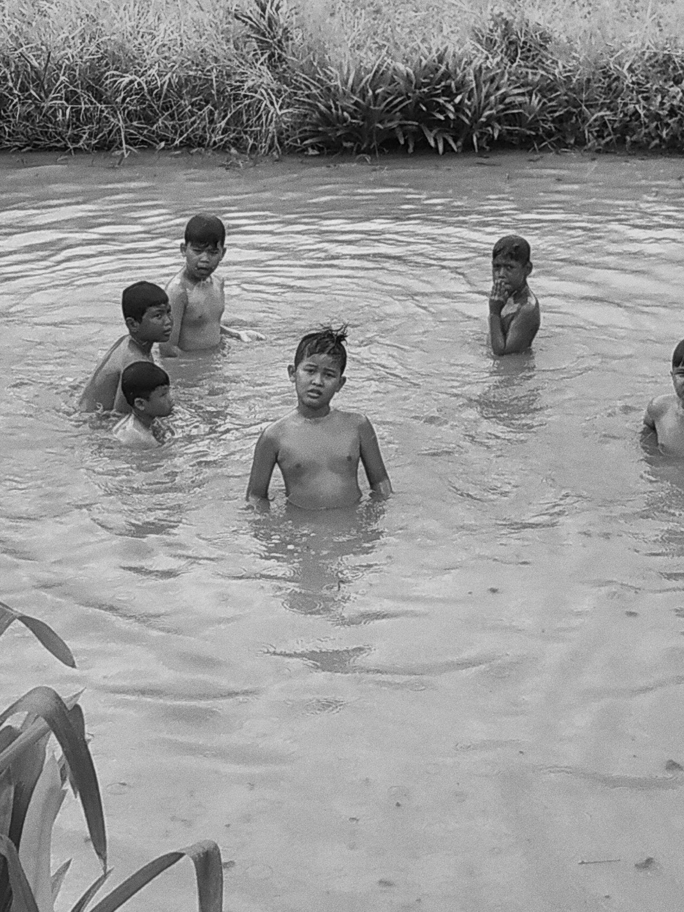

"Asal km tau, aku main sama bocil itu krna sbab km. Klo gada km gabakal aku main sm bochill sesering itu"
Dan kalau boleh jujur sedari kecil, aku merasa akan bertemu seorang anak dgn kriteria tertentu, kurasa anak itu adalah km. utk skrg aku pasrah akan kehadiranmu karena aku sadar mencintai itu tak harus memiliki.
Sifat dan kepribadianmu banyak mengajariku, Datangmu membawa perubahan utku supaya mjd pribadi yg lebih baik, Karena sudah takdirnya begitu.